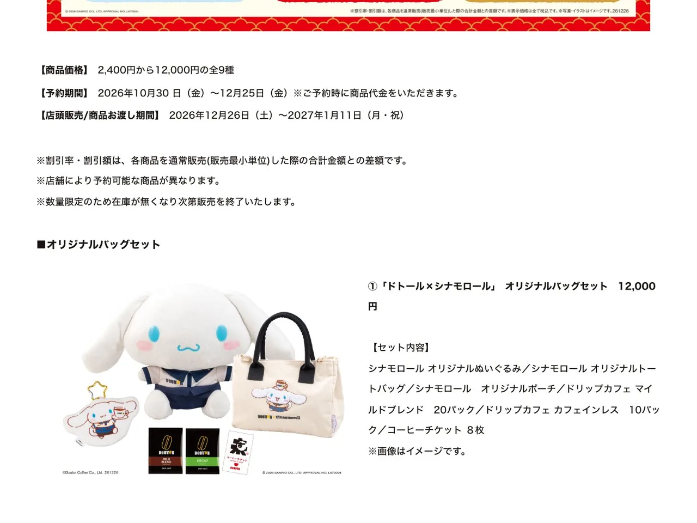
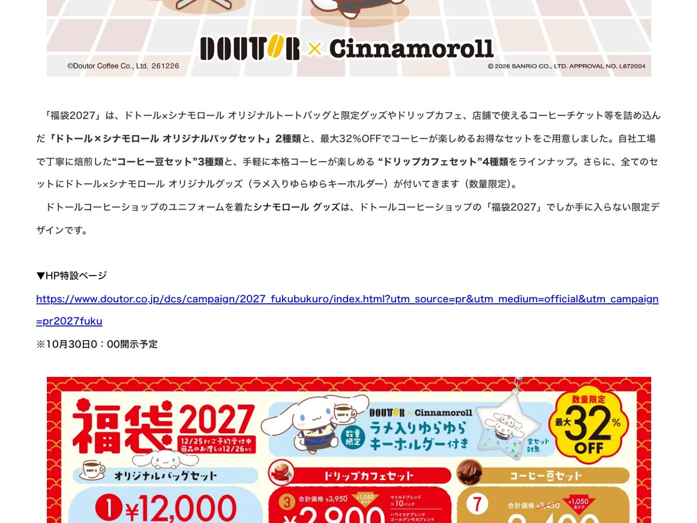

ドトール福袋2027の店頭予約は2026年12月25日までです。12月26日から2027年1月11日までが店頭販売と予約分の受取期間です。11月22日時点の公式発表では、シナモロールのバッグセット2種を含む全9種が案内されています。
01店頭予約はいつまで？支払いと受取の日程
| 項目 | 公式の案内 |
|---|---|
| 店頭予約 | 2026年10月30日〜12月25日 |
| 支払い | 店頭予約時に商品代金を支払い |
| 店頭販売・予約分の受取 | 2026年12月26日〜2027年1月11日 |
店頭予約の代金は、商品を受け取る日より前の予約時に支払います。 店舗によって予約できる商品は異なります。予約を考えている場合は、利用する店舗の取扱商品を確認します。数量限定で、在庫がなくなり次第終了です。
02シナモロールのバッグセットとコーヒー福袋の中身
バッグセットは、ぬいぐるみ入りと、マスコットチャーム入りの2種類です。 どちらにもマイルドブレンドとカフェインレスのドリップカフェ、店舗で使えるコーヒーチケットが入ります。
| 種類 | 中身 |
|---|---|
| オリジナルバッグセット | ぬいぐるみ、トートバッグ、ポーチ、マイルドブレンド20パック、カフェインレス10パック、コーヒーチケット8枚 |
| オリジナルバッグセット | マスコットチャーム、コーデュロイバッグ、マイルドブレンド10パック、カフェインレス5パック、コーヒーチケット4枚 |
| ドリップカフェセット | ドリップカフェとコーヒーチケット。ドリップカフェの入数はセットごとに異なる |
| コーヒー豆セット | コーヒー豆2種または4種とコーヒーチケット |
店頭セットの価格はドトールの福袋2027公式案内で確認できます。公式の店頭販促画像に表示された価格は税込です。ドリップと豆のセットは未年デザインの紙袋入りです。店頭セット共通のシナモロールのラメ入りゆらゆらキーホルダーは数量限定で、なくなり次第終了します。


03コーヒーチケットは何と交換できる？
コーヒーチケットの有効期限は2027年5月31日です。 2026年12月26日から全国のドトールコーヒーショップで使えます。対象はブレンド、アメリカン、アイスコーヒーのいずれかです。引換サイズは各店舗のメニューで最小のものです。
注意セットメニューには使えません。追加料金によるサイズアップやドリンク変更、ほかの特典や割引券との併用もできません。
04よくある質問
店頭予約はいつ支払いますか？
商品代金は予約時に支払います。商品は12月26日から2027年1月11日までの受取期間に受け取ります。
バッグが付く店頭セットはいくらですか？
店頭セットの価格はドトールの福袋2027公式案内で確認できます。バッグセットは、ぬいぐるみとトートバッグ入り、マスコットチャームとコーデュロイバッグ入りの2種類です。
コーヒーチケットでサイズアップできますか？
追加料金を支払ってもサイズアップはできません。引換は各店舗のメニューの最小サイズです。
05まとめ
結論店頭予約は12月25日までです。予約時に代金を支払い、12月26日から2027年1月11日までに受け取ります。
福袋のコーヒーチケットは2027年5月31日まで使えます。シナモロールを含む別の販売企画は、サンリオ福袋2027の案内で確認できます。